إشارات المرور في المملكة المتحدة مشروحة بالعربية
ماذا تعني كل إشارة وما اسمها بالإنجليزية. Signo تطبيق للآيفون فيه 136 إشارة و535 عبارة للقيادة في المملكة المتحدة، مشروحة بالعربية.
حمّله من App Storeمجانًا: 3 مواضيع للإشارات و25 كلمة عن أجزاء السيارة. Signo Pro يفتح كل شيء.


تعلّم كأنك تلعب
إن كنت تعرف الإشارة فاسحب يمينًا، وإلا فاسحب يسارًا لتعود إليك. استمع إلى كل اسم إنجليزي بصوت بريطاني، ثم أجب عن اختبار قصير.
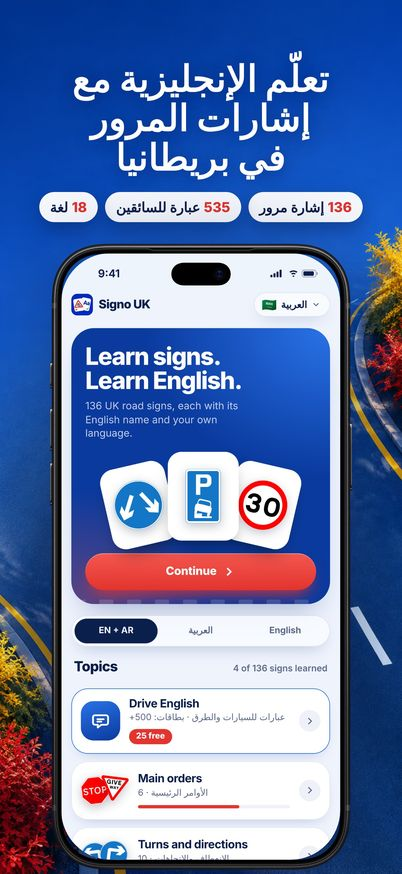
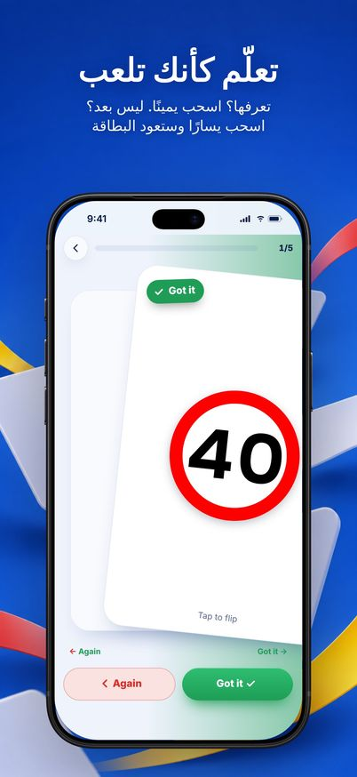
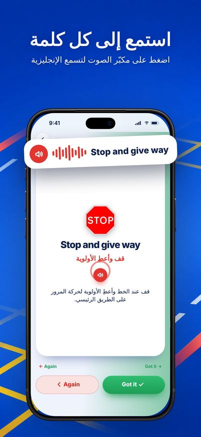
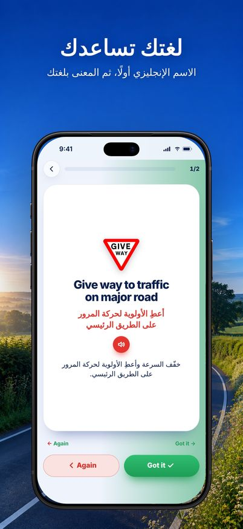
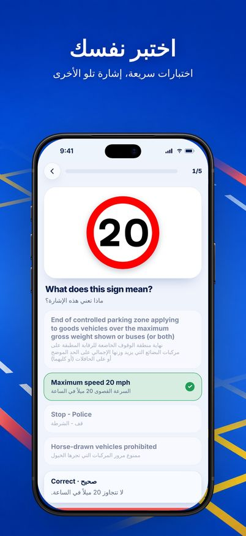
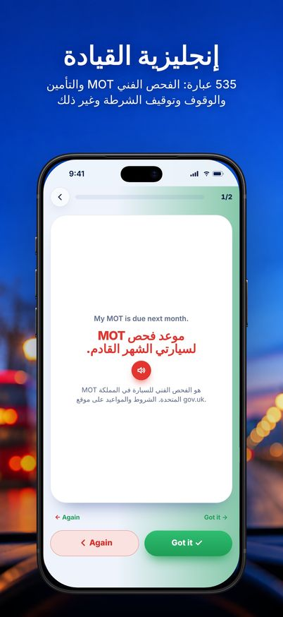
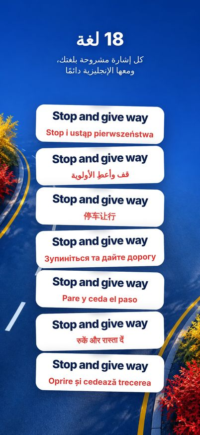
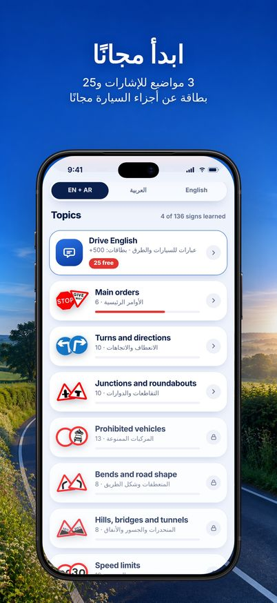
إشارات شائعة ومعانيها
اضغط على إشارة لقراءة الشرح.
- قف وأعطِ الأولويةStop and give way
 أعطِ الأولوية لحركة المرور على الطريق الرئيسيGive way to traffic on major road
أعطِ الأولوية لحركة المرور على الطريق الرئيسيGive way to traffic on major road ممنوع دخول المركباتNo entry for vehicular traffic
ممنوع دخول المركباتNo entry for vehicular traffic يسري حد السرعة الوطنيNational speed limit applies
يسري حد السرعة الوطنيNational speed limit applies- السرعة القصوى 30 ميلاً في الساعةMaximum speed 30 mph
 السرعة القصوى 20 ميلاً في الساعةMaximum speed 20 mph
السرعة القصوى 20 ميلاً في الساعةMaximum speed 20 mph السرعة القصوى 40 ميلاً في الساعةMaximum speed 40 mph
السرعة القصوى 40 ميلاً في الساعةMaximum speed 40 mph السرعة القصوى 50 ميلاً في الساعةMaximum speed 50 mph
السرعة القصوى 50 ميلاً في الساعةMaximum speed 50 mph السرعة القصوى 60 ميلاً في الساعةMaximum speed 60 mph
السرعة القصوى 60 ميلاً في الساعةMaximum speed 60 mph مدخل منطقة 20 ميلاً في الساعةEntry to 20 mph zone
مدخل منطقة 20 ميلاً في الساعةEntry to 20 mph zone ممنوع التجاوزNo overtaking
ممنوع التجاوزNo overtaking ممنوع الانعطاف يميناًNo right turn
ممنوع الانعطاف يميناًNo right turn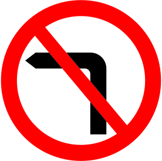
ممنوع الانعطاف يساراًNo left turn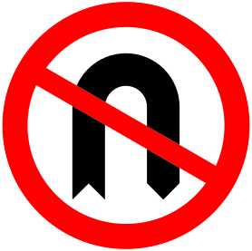
ممنوع الالتفاف للخلفNo U-turns حافظ على اليسارKeep left
حافظ على اليسارKeep left دوار صغيرMini-roundabout
دوار صغيرMini-roundabout- دوار في الأمامRoundabout ahead
 ممنوع مرور جميع المركباتAll vehicles prohibited
ممنوع مرور جميع المركباتAll vehicles prohibited ممنوع مرور المركبات الآليةNo motor vehicles
ممنوع مرور المركبات الآليةNo motor vehicles ممنوع التوقف على المسار الرئيسيNo stopping on main carriageway
ممنوع التوقف على المسار الرئيسيNo stopping on main carriageway مسار مخصص للحافلات والدراجات الهوائية وسيارات الأجرة فقطRoute for use by buses, pedal cycles and taxis only
مسار مخصص للحافلات والدراجات الهوائية وسيارات الأجرة فقطRoute for use by buses, pedal cycles and taxis only مدخل منطقة وقوف خاضعة للرقابةEntrance to controlled parking zone
مدخل منطقة وقوف خاضعة للرقابةEntrance to controlled parking zone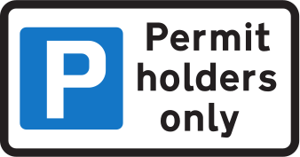
لحاملي التصاريح فقطPermit holders only لحاملي شارة الإعاقة فقطDisabled badge holders only
لحاملي شارة الإعاقة فقطDisabled badge holders only موقف سياراتParking place
موقف سياراتParking place كاميرات السرعةSpeed cameras
كاميرات السرعةSpeed cameras قف - الشرطةStop - Police
قف - الشرطةStop - Police النقطة التي تبدأ منها قواعد الطريق السريعPoint at which motorway regulations start to apply
النقطة التي تبدأ منها قواعد الطريق السريعPoint at which motorway regulations start to apply إشارات مرور في الأمامTraffic signals ahead
إشارات مرور في الأمامTraffic signals ahead معبر مشاة (ممر الحمار الوحشي)Zebra crossing
معبر مشاة (ممر الحمار الوحشي)Zebra crossing أطفال ذاهبون إلى المدرسة أو الملعب أو عائدون منهما في الأمامChildren going to or from school or playground ahead
أطفال ذاهبون إلى المدرسة أو الملعب أو عائدون منهما في الأمامChildren going to or from school or playground ahead أعمال طرقRoad works
أعمال طرقRoad works طريق زلقSlippery road
طريق زلقSlippery road معبر سكة حديد مزود ببوابة أو حاجز في الأمامLevel crossing with gate or barrier ahead
معبر سكة حديد مزود ببوابة أو حاجز في الأمامLevel crossing with gate or barrier ahead معبر سكة حديد بدون بوابة أو حاجز في الأمامRailway level crossing without gate or barrier ahead
معبر سكة حديد بدون بوابة أو حاجز في الأمامRailway level crossing without gate or barrier ahead أعطِ الأولوية للمركبات القادمة من الاتجاه المعاكسGive priority to vehicles from opposite direction
أعطِ الأولوية للمركبات القادمة من الاتجاه المعاكسGive priority to vehicles from opposite direction لك الأولوية على المركبات القادمة من الاتجاه المعاكسTraffic has priority over oncoming vehicles
لك الأولوية على المركبات القادمة من الاتجاه المعاكسTraffic has priority over oncoming vehicles ممنوع مرور المركبات التي يزيد ارتفاعها على الحد الموضحNo vehicles over height shown
ممنوع مرور المركبات التي يزيد ارتفاعها على الحد الموضحNo vehicles over height shown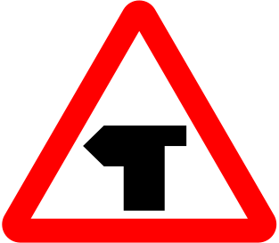
تقاطع على شكل حرف T في الأمامT-junction ahead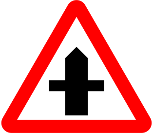
تقاطع طرق في الأمامCrossroads ahead طريق بمسار واحدSingle track road
طريق بمسار واحدSingle track road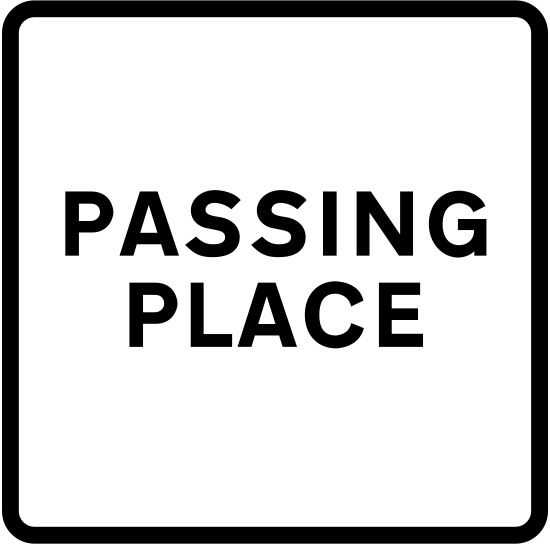
مكان تجاوزPassing place
أجزاء السيارة بالإنجليزية
25 كلمة من فصل Drive English المجاني. اضغط على كلمة لسماعها.
كل الإشارات الـ 136 في التطبيق
مجانًا: 3 مواضيع للإشارات و25 كلمة عن أجزاء السيارة. Signo Pro يفتح كل شيء.